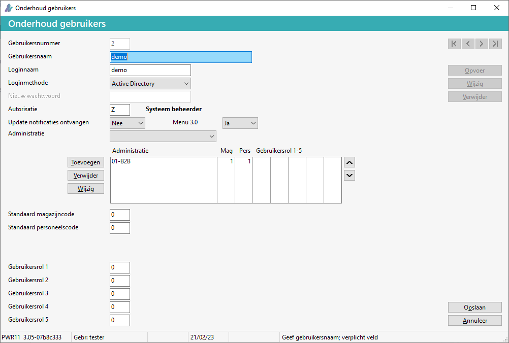

Ga in het systeemmenu naar Systeembeheer > Onderhoud gebruikers.
Selecteer de gebruiker.
-
Bij F4 verschijnt het scherm Zoek gebruikers.
Kies voor de knop Wijzigen. of Kies voor de knop Opvoer.
Om de Standaard magazijncode of Standaard personeelscode of Gebruikersrol te wijzigen:
-
Selecteer bij administratie, de betreffende administratie.
-
Voor toevoegen administratie:
-
Geef de autorisatiecode in.
-
Vul de standaard magazijn, personeelscode en eventuele gebruikersrollen 1-5 in.
-
Kies voor de knop Toevoegen.
-
De administratie verschijnt in het scherm.
-
-
Indien nodig verplaats de administratie d.m.v. de 'pijltje naar boven' knop
 .
.
Belangrijk: Als de administratie volgorde gewijzigd wordt, gaat dit direct in. De 'oude' volgorde blijft staan, log daarom uit en weer in.
Tip: Bij meerdere administraties: zet de meest gebruikte administratie bovenaan.
-
-
Voor wijzigen administratie:
-
Kies voor de knop Wijzig.
-
Selecteer of wijzig de magazijn-, personeelscode of gebruikersrol(len).
-
Kies voor de knop Opslaan. (Links bij administratie).
-
Achter de administratie(s) verschijnen deze gegevens.
-
-
Kies voor de knop Opslaan.